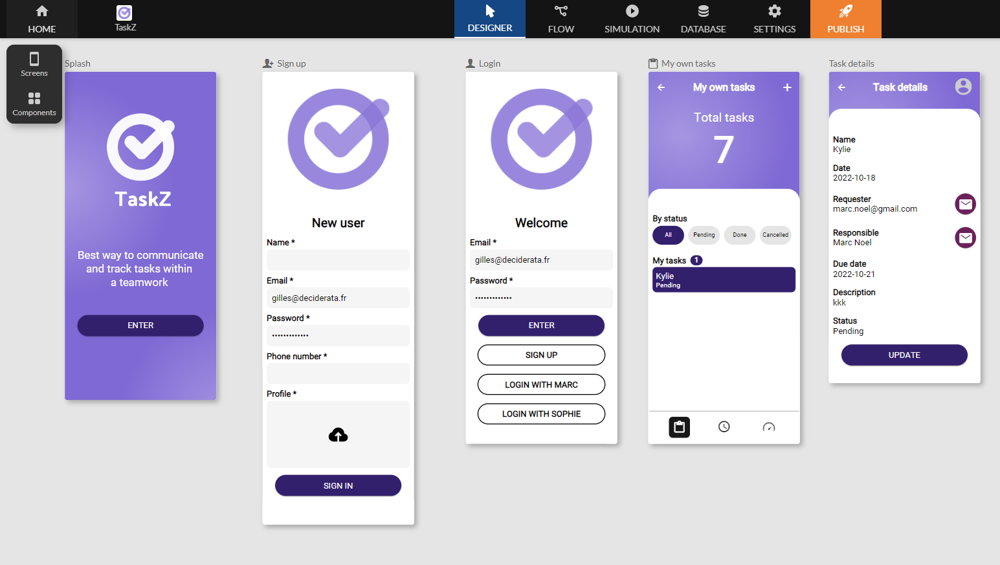

Design tool
This section details the various design tools available on our platform, as well as access to essential settings.

Screen Editor
The screen editor is the central tool for the visual design of each screen in your application. Use this intuitive editor to create attractive and functional user interfaces.
Features
- Easy addition of components such as buttons, text fields, lists, images, etc.
- Customization of layout and style
- Real-time preview of changes made
Screen Sequence Editor
The screen sequence editor allows you to define the navigation flow of your application by setting the logical sequence of screens.
Features
- Creation of navigation scenarios
- Management of transitions between screens
- Visualization of the user journey
- Definition of the start screen
Mobile Application Simulator
Use the mobile application simulator to preview the appearance and behavior of your application on different devices and resolutions.
Available options
- Selection of different mobile device models
- Testing the user interface and features
Database and Tables Editor
The database editor allows you to model the structure of your database and define the necessary tables to store your application's data.
Features
- Creation and management of tables
- Definition of relationships between tables
- Data import/export
Settings
This section provides centralized access to your application's essential settings.
Application Information
View and edit key information about your application, such as name, icon, version, etc.
Accessible details
- Application name and description
- Icon and associated visuals
- Version information
- Your notification email
Integrations
Manage integrations with other services and platforms to enhance your application's features.
Possible actions
- Adding third-party integrations like Zapier, Make, Twilio, Airtable, TimeTonic, ...
- Configuration of integration settings
Plugins
Explore and activate plugins to extend your application's features in a modular way.
Plugin features
- List of available plugins
- Activation/deactivation of plugins
- Plugin-specific configuration